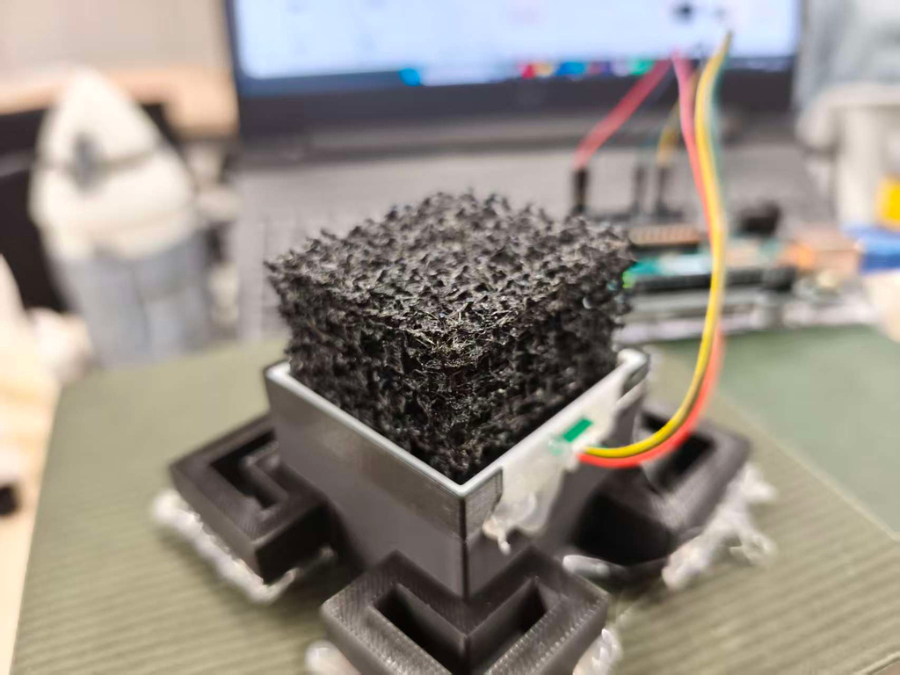
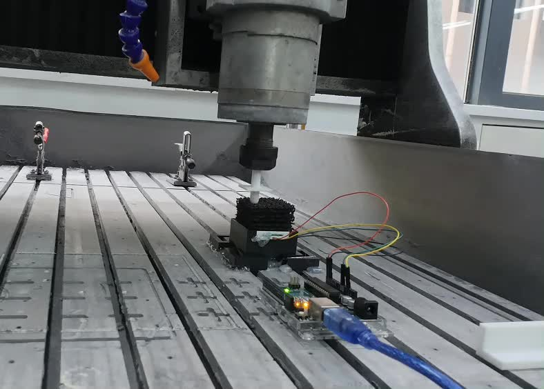
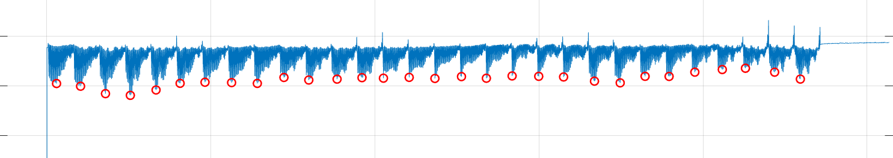
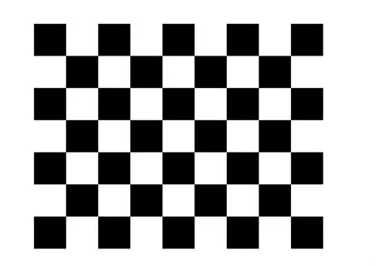
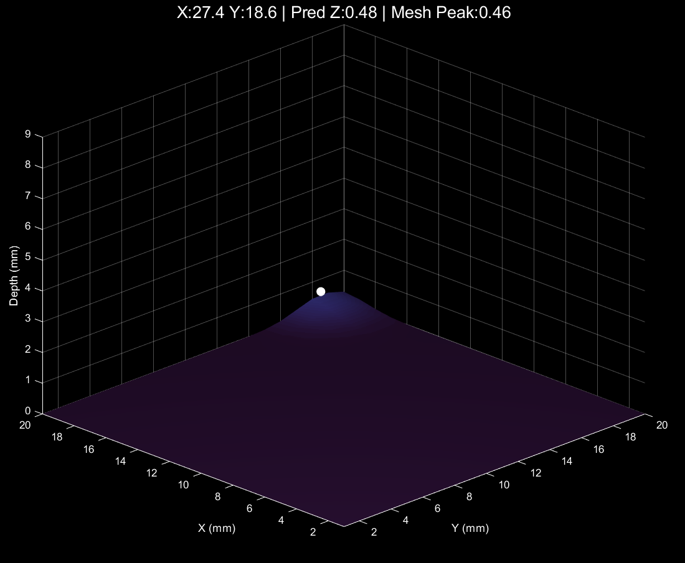
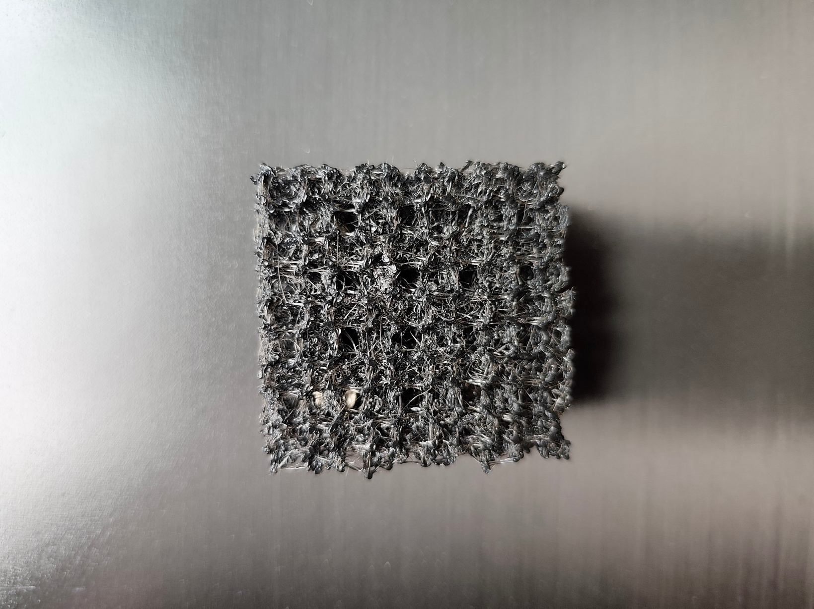

Locating touch through magnetic fields
Can magnetic signals tell us where a soft structure is pressed, and how deeply? We built an acquisition and learning pipeline based on eFlesh to explore this question.
01Turn deformation into a signal
Pressing the lattice displaces or reorients its embedded magnets. Magnetometers detect the resulting field changes. A model learns to map 15 channels to an estimate of x, y, and indentation depth.
Scope: single-point contact. This project reproduces and develops a workflow based on eFlesh; eFlesh itself is prior work.

- PressContact deforms the lattice
- MeasureRecord 15 magnetic channels
- EstimateAn MLP predicts x, y, z
- VisualizeDisplay position and depth
02Collect data with known labels

We sampled a nominal 30 × 30 mm area at a 1.5 mm step: 20 × 20 positions and five depths (2, 3, 4, 5, and 6 mm). The 2,000 indentations took approximately 3.5 hours.
The programmed sequence provides the position and depth labels. Continuous magnetic recordings must be aligned with that sequence before training.
These are our acquisition settings, not the original paper’s experimental settings.
03Align signals with individual presses
Detecting presses from signal differences alone was unreliable when the response was weak. We used the machine’s start time and cycle periods to segment the recordings and associate them with programmed coordinates.
- Raw recordingContinuous 15-channel signals
- ResamplingRegularize the time axis
- SmoothingReduce fluctuations
- SegmentationPair each press with x, y, z

04Learn and check interpolation
We standardized the channels and trained a multilayer perceptron to regress three coordinates. A spatial checkerboard split assigns alternating positions to training and validation.
This evaluation probes interpolation between positions. It does not by itself establish day-to-day stability, transfer to another sensor, or multi-contact recognition.

| Axis | MAE | RMSE |
|---|---|---|
| X | 0.5742 | 0.8045 |
| Y | 0.5432 | 0.7353 |
| Z | 0.1833 | 0.2462 |
Both metrics quantify prediction error. We do not interpret RMSE as an independent measure of temporal stability.
05Make touch visible

The interface shows the predicted position as a point and depth as a raised mesh. This is a visualization of the predicted contact, not a full measurement of the surface shape.
The presentation demonstrates a live-updating interface but does not provide a measured latency.
06What we would test next
Acquisition order: test different scan paths to investigate the X/Y error difference. This is a hypothesis, not an established cause.
Durability: damage was observed after 2,000 presses. A protective top layer and revised lattice geometry are next design candidates.
Multiple contacts: magnetic responses mix deformations. Foot-contact applications would require new data and validation; they are not demonstrated by this single-contact model.
